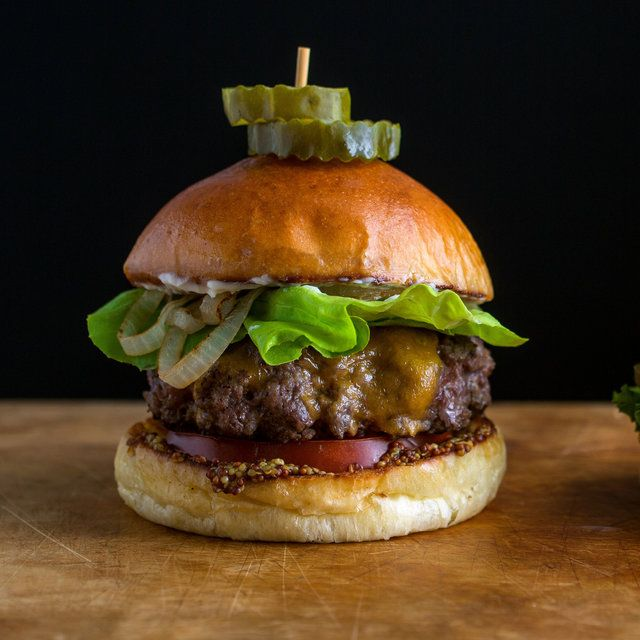
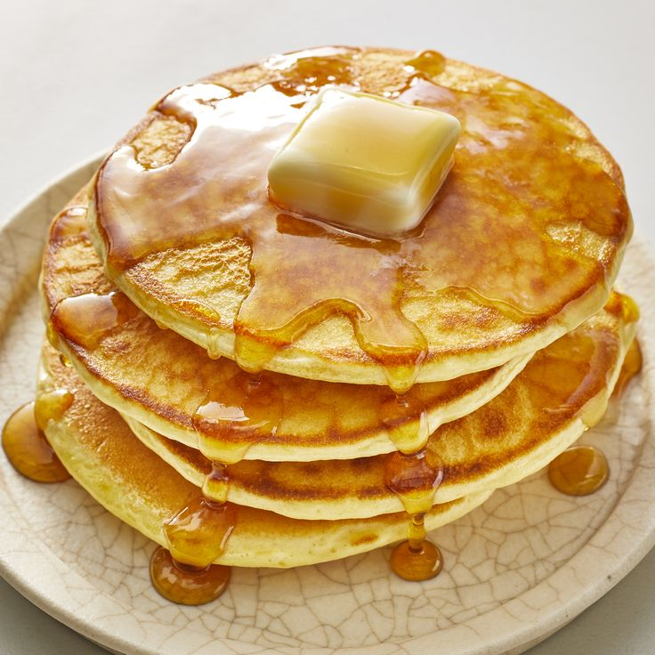

Hamburger
A hamburger is a popular and iconic American dish consisting of a ground meat patty, usually beef, that is seasoned, cooked, and placed between two slices of bread, which is typically a round bun. The patty is often grilled, pan-fried, or flame-broiled. Hamburger patties can vary in size and thickness, and they are commonly seasoned with salt and pepper or other spices for flavor.
Learn How to Cook Hamburger Here
French Toast

French toast, also known as eggy bread, is a breakfast dish made by soaking slices of bread in a mixture of beaten eggs and milk or cream, then frying them until they are golden brown. The bread slices are often seasoned with cinnamon, vanilla, or other flavorings to enhance the taste.
Learn How to Cook French Toast Here
Pancake
Pancakes are a popular breakfast dish that consists of a batter made from flour, eggs, milk, and a leavening agent (such as baking powder or baking soda). The batter is poured onto a hot griddle or frying pan and cooked until the pancakes are golden brown on both sides.
Learn How to Cook Pancake Here